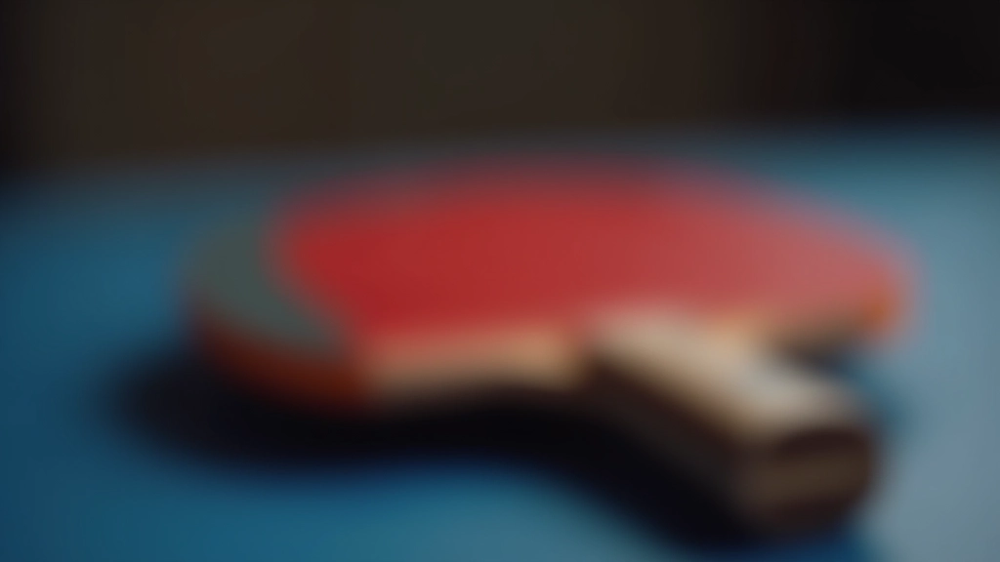
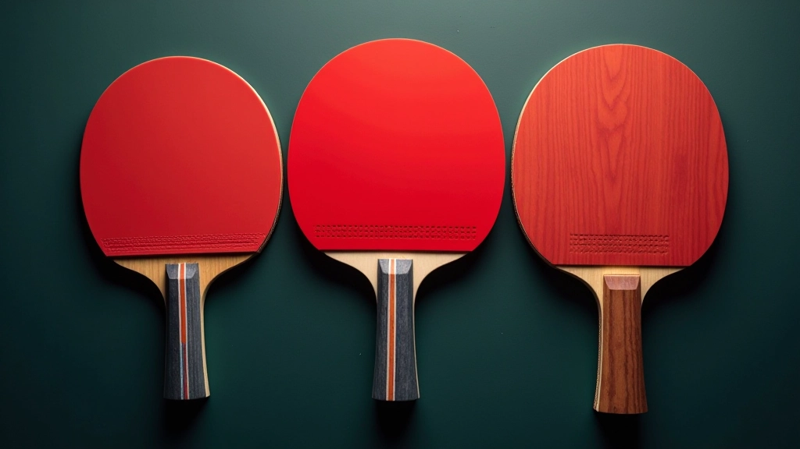
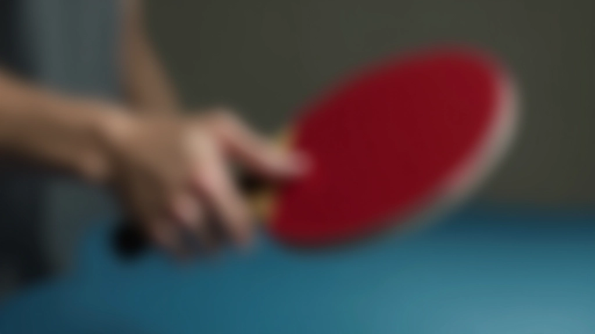
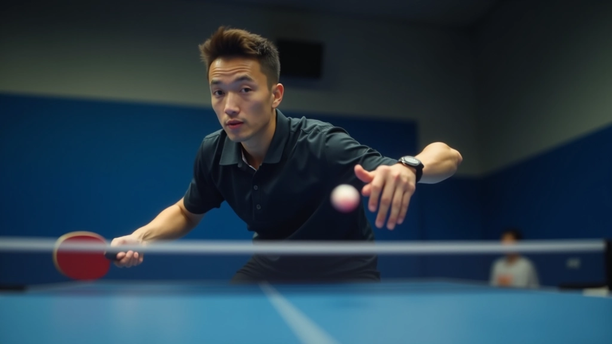

تمارين تقوية الذراع والكتف للوب الخلفي
تمارين عملية تساعدك على بناء القوة اللازمة لتنفيذ اللوب بقوة واتساق. نركز على التمارين المثبتة والفعالة.
نوع المضرب يؤثر كثيراً على أداء اللوب. نساعدك على فهم الفروقات بين الخيارات المختلفة واختيار ما يناسب أسلوبك وتطورك.


الكثير من الناس يعتقدون أن المضرب مجرد أداة. لكن الحقيقة أنه يؤثر بشكل مباشر على قدرتك على تنفيذ اللوب بنجاح. المضرب الخاطئ يجعل حتى التقنية الصحيحة تبدو صعبة. والمضرب المناسب يساعدك تحسن بسرعة أكبر.
ما تختاره الآن سيؤثر على تدريباتك للأشهر القادمة. لذلك من المهم فهم الخيارات بشكل صحيح قبل الاستثمار. نحن هنا لنساعدك تتخذ القرار الصحيح.


يوجد ثلاثة أنواع رئيسية تحتاج تفهمها. كل واحد له خصائصه الخاصة وينسب لأسلوب لعب مختلف.
تتميز بسطح أكثر صلابة وسمك أقل. توفر تحكماً عالياً وسرعة كبيرة في نقل القوة. تحتاج لاعب قوي وذو مستوى تقني جيد. مناسبة للاعبي اللوب الخلفي الذين يريدون قوة إضافية.
سطح أكثر طراوة وتوسيد أفضل. توفر تحكماً أعلى لكن قوة أقل. تساعد المبتدئين على إتقان التقنية قبل التفكير في القوة. إذا كنت في البداية، هذا خيار ذكي.
توازن بين القوة والتحكم. سمك متوسط وسطح متوازن. تناسب معظم اللاعبين. خيار آمن إذا لم تكن متأكداً من تفضيلاتك.
الإمساك الصحيح مهم مثل نوع المضرب. المضرب يجب أن يناسب حجم يدك ويكون مريحاً للإمساك لفترات طويلة. اليد المتعبة تعني تقنية سيئة ودقة أقل.
الحجم المناسب: المضرب يجب أن لا يكون ضيقاً جداً ولا فضفاضاً. تستطيع تحريك إصبعك حول الإمساك بسهولة.
المادة: الإمساك الجلدي يوفر ثبات أفضل من القماش. يمتص العرق بشكل أفضل ويدوم أطول.
السمك: إمساك سميك جداً يرهق اليد. رقيق جداً لا يوفر ثبات كافي. التوازن أهم من كل شيء.

الكاوتشوك هو أهم جزء في المضرب. هو الذي يتحكم في كيفية حركة الكرة عندما تصيبها. النقوش الصغيرة على السطح توثر على الدوران والسرعة.
كاوتشوك مع نقوش عميقة يعطيك دوران أكثر، لكن تحكم أقل. كاوتشوك ناعم أكثر يسهل التحكم به. للوب الخلفي، تحتاج توازن. تريد دوران كافي لكن تحتاج تحكم أيضاً. معظم لاعبي اللوب يختارون كاوتشوك متوسط النقوش.
سمك الكاوتشوك يقاس بالملليمتر. سمك أكثر يعطي مزيد من السرعة والقوة. سمك أقل يعطيك تحكم أفضل. لاعبو اللوب عادة يختارون 2 إلى 2.5 ملليمتر. هذا يوفر توازن جيد بين القوة والتحكم.
المضرب الغالي ليس دائماً الأفضل. المبتدئون والمتوسطون يستفيدون أكثر من مضرب متوازن بسعر معقول. الفروقات الدقيقة بين مضرب وآخر تظهر عند مستويات تقنية عالية فقط.
الخطأ الشائع هو شراء مضرب باهظ الثمن قبل أن تتأكد من أنك ستستمر في اللعبة. ابدأ بمضرب جيد بسعر معقول. بعد 6 أشهر من التدريب المنتظم، ستفهم احتياجاتك بشكل أفضل وتستطيع الاستثمار أكثر.
ركز على الراحة والتحكم. لا تنفق أكثر من اللازم. مضرب متوسط الجودة يكفي لسنة أو سنتين من التدريب المنتظم.
اختر مضرب يناسب أسلوبك. استثمر في جودة أفضل. هنا تبدأ الفروقات تؤثر على أدائك.
الآن تستحق أن تنفق على مضرب احترافي. الفروقات الدقيقة تصير مهمة. اختر بناءً على خبرتك وتفضيلاتك.

اختيار المضرب قرار مهم، لكن ليس يجب أن يكون معقداً. تذكر هذه النقاط الأساسية: اختر نوع مضرب يناسب مستواك الحالي، تأكد من أن الإمساك مريح وآمن، اهتم بجودة الكاوتشوك لا السعر الكبير.
المضرب الجيد يساعدك على التطور بسرعة. لكن المضرب وحده لا يكفي. تحتاج تدريب منتظم، تصحيح الأخطاء، وممارسة جادة. الآن بعد أن تفهم كيفية اختيار المضرب، ركز على تحسين تقنيتك. الباقي سيأتي مع الوقت والممارسة.
هذا الدليل مقدم لأغراض تعليمية وإرشادية فقط. الخصائص المذكورة تعتمد على تجارب عملية وملاحظات عامة. احتياجاتك الشخصية قد تختلف حسب أسلوبك وجسمك وتفضيلاتك. ننصح دائماً باستشارة مدرب متخصص قبل شراء مضرب جديد، خاصة إذا كنت لاعباً جاداً تطمح للمنافسة.
تابع رحلتك في إتقان اللوب الخلفي
تمارين عملية تساعدك على بناء القوة اللازمة لتنفيذ اللوب بقوة واتساق. نركز على التمارين المثبتة والفعالة.

أغلب المبتدئين يرتكبون أخطاء في وضعية الجسد أثناء اللوب. نشرح الأخطاء الثلاثة الأكثر شيوعاً وكيفية تصحيحها.

بعد إتقان الأساسيات، انتقل للمستويات الأعلى. نشرح كيفية تطبيق اللوب في المباريات الفعلية والاستراتيجيات المتقدمة.